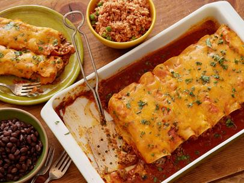

Enchiladas

Description
Baked corn or flower tortillas with a meat filling and served with red chili sauce. A savory meal originating from Mexico, enchiladas can be enjoyed for dinner or lunch.
Some good choices of sides with your enchiladas include black beans, guacamole or rice.
Ingredients
- 1lb of meat (ground beef or chicken)
- 12 corn or flour tortillas
- 2 cans of red enchilada sauce
- 1/2 cup of shredded cheese
- 1 tbsp of diced green chili
- 1/3 cup of mild salsa
Steps
- Preheat oven to 350 degrees
- Cook meat at medium heat untl browned
- Turn heat down to low, add 1 can of enchilada sauce and cheese. Simmer for 5 minutes on low, stirring occasionally.
- Spoon filling into tortillas and place in baking dish.
- Cover enchiladas in baking dish with 2nd can of enchilada sauce
- Place green chilis and salsa atop enchiladas
- Bake enchiladas in oven for 25 minutes
- Remove from oven and let stand for 5 minutes before serving